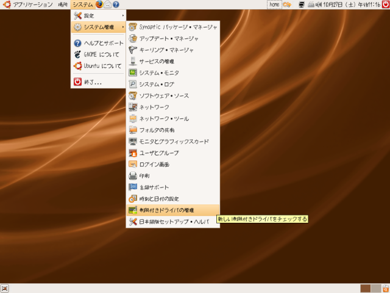
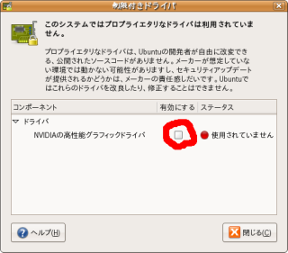
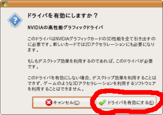
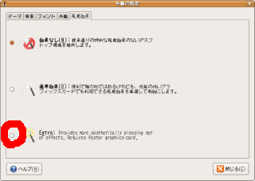
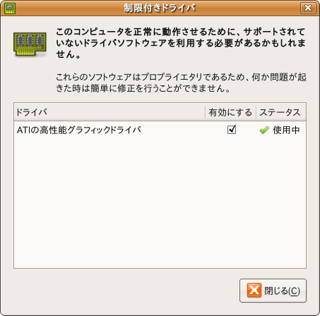

OpenHRP では3Dグラフィックスを利用するため、
「3Dアクセレレーション機能」を持つグラフィックチップのドライバを導入する必要があります
(注)。お使いのグラフィックチップによって、グラフィックドライバの導入方法が変わりますので、
以下のように設定してください。
（注）
基本的は「3Dアクセレレーション機能」が有効になっていなくても、OpenHRP が動作します。しかし、
グラフィックスの動作が遅くなり、スムーズに動作しない可能性があります。
この動作はパソコンの CPU やメモリなどのハードウェア機器の性能と、グラフィックチップの種類によって
変わっていきます。例えば、全然問題なくスムーズに動作する場合もあれば、OpenHRP の基本動作さえ
しない場合もあります。
-
古いグラフィックチップだと3Dアクセレレーション機能がサポートしない場合もありますので、予めにご了承ください。
Intel 型オンボードチップの場合
Intel 型ですと、基本的にドライバを導入する必要はありません。機能は最小限に抑えられているものの、
最初の起動段階ですでに3Dアクセレレーション機能が有効になっているはずです。
NVIDIA 型チップへのドライバインストール
インストール直後に自動設定される 「nv」 というオープンソースのドライバには、3Dアクセレレーション機能が
付いていません。そのため 「nVidia」 という制限付きドライバの導入が必要となります。
これから、その導入手法について説明します。
- 「システム」 → 「システム管理」 → 「制限付きドライバの管理」 をクリックして「制限付きドライバ」
を開きます。パスワード入力を求められたら、ログイン時に入力するパスワードを入力します。

- 「制限付きドライバ」が開いたら、「ドライバ」の「NVIDIAの高性能グラフィックドライバ」の
「有効にする」 の項目にチェックをします（□をクリック）。

- 確認が出たら、「ドライバを有効にする(E)」をクリックします。

- 再起動を求められるので、言われた通りに再起動します。
それでは本題に入ります。
- システム→設定→外観の設定を開き、視覚効果タブを開きます。
- Extraの左にある○をクリックします。少し待つとこれで本当にいいか聞かれますので「Keep settings」
をクリックします。


これで導入できました。ウインドウを開いたり閉じたり、動かしたりしたら、視覚効果が有効になっている
のを確認できるでしょう。
ATI 型チップへのドライバインストール
一般に ATI 型のチップでは導入が難しいです。場合によって設定なしで動くこともありますが、
基本的に下記の fglrx と XGL の導入が必要とします。
fglrx ドライバのインストール
Ubuntu なら nVIDIA ドライバと同じ手順で導入できます。ただし、この方法でインストールされるドライバは
、fglrx という ATI 用の制限付きドライバであり、比較的新しいグラフィックチップでしか使えません。対応している
グラフィックチップは、下記に示すものに限られます。
| fgrlx 対応チップ |
|---|
| チップ |
モデル |
| Mobility Radeon |
X1800, X1600, X1400, X1300,
X800, X700, X600, X300,
9800, 9600, 9550, 9500 |
Radeon Xpress |
200M series, 200 series,
1250 IGP |
Radeon |
X1900, X1800, X1600, X1300,
X850, X800, X700, X600,
X550, X300, 9800, 9700,
9600, 9550, 9500 |
それでは、導入方法について説明します。
まず、アップデートして最新カーネルで再起動します。
「システム」 → 「システム管理」 → 「制限つきドライバの管理」と辿ります。
すると「ATIの高性能グラフィックドライバ」というのが自動認識で表示されるはずです。
「有効にする」というチェックボックスにチェックを入れます。
ドライバのダウンロードとインストールが自動的に始まります。
インストール完了後、「ドライバを有効にしますか？」と訊かれますので、
「Enable Driver」をクリックして下さい。
その後、再起動すれば fglrx ドライバが有効になります。

インストールが完了し、再起動した後の状態
XGL のインストール
さらに、fglrx は、そのままでは3Dグラフィックをサポートしません。fglrx ドライバで、
3Dグラフィックスを利用するアプリケーションを起動するには、XGL というプログラムが必要となります。
XGL のインストールは簡単です。端末で下記のコマンドを実行して、ログインしなおせば、それだけで
XGL が有効になっているはずです。
$ sudo apt-get install xserver-xgl
※ XGL の導入について詳しくは、
こちら
【CompizFusionの導入方法】 → ステップ１～３

{kind=link}